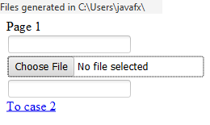
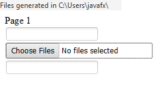

Test for FILE input control
- Wait for test page to load. There should be "Page 1" title at the top of loaded page:

- You should see a focus ring around file select element.
- Click on "To case 2" link.
- A new page should be loaded:

You should see a focus ring around file select element.
The test passes if all steps pass.